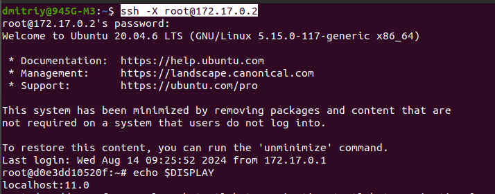

В общем те же проблемы, что при запуске из хоста.
Код Dockerfile:
-------------------------------------------------------------------------------------
FROM osrf/ros:noetic-desktop
# set environment variables
ENV PYTHONDONTWRITEBYTECODE 1 # Предотвращает создание .pyc файлов
ENV PYTHONUNBUFFERED 1 # Предотвращает буферизацию вывода Python, улучшая логирование
#nvidia-container-runtime
ENV NVIDIA_VISIBLE_DEVICES \
${NVIDIA_VISIBLE_DEVICES:-all}
ENV NVIDIA_DRIVER_CAPABILITIES \
${NVIDIA_DRIVER_CAPABILITIES:+$NVIDIA_DRIVER_CAPABILITIES,}graphics
# set work directory
#RUN mkdir /workspace/src/mobile_robot_base_ros1 -p
WORKDIR /task5
# Additional commands (installing dependencies)
RUN apt-get update && \
apt-get install -y \
curl \
wget \
python3-pip \
python3-tk # Пакеты длля tkinter
# Gazebo 11
RUN sudo sh -c 'echo "deb http://packages.osrfoundation.org/gazebo/ubuntu-stable `lsb_release -cs` main" > /etc/apt/sources.list.d/gazebo-stable.list'
RUN wget https://packages.osrfoundation.org/gazebo.key -O - | sudo apt-key add -
RUN sudo apt-get install -y libgazebo11-dev
# RUN sudo apt-get install -y ros-noetic-gazebo-ros
# RUN sudo apt-get install -y gazebo11
# Дополнительные пакеты Gazebo для работы с ROS
# RUN curl -sSL http://get.gazebosim.org | sh
RUN apt-get update && \
apt-get install -y \
# gazebo11 \
# libgazebo11-dev
ros-noetic-gazebo-ros \
ros-noetic-gazebo-ros-pkgs \
ros-noetic-gazebo-ros-control
# Установка дополнительных пакетов ROS для управления и работы с роботами
RUN apt-get update && \
apt-get install -y \
ros-noetic-control-toolbox \
ros-noetic-realtime-tools \
ros-noetic-ros-controllers \
ros-noetic-xacro \
python3-wstool \
ros-noetic-tf-conversions \
ros-noetic-kdl-parser \
liburdfdom-tools
# Установка инструментов для разработки
# net-tools содержит сетевую утилиту ifconfig
# curl служит для закачки файлов по url-адресу
# iputils-ping содержит команду ping
RUN apt-get update && \
apt-get install -y \
nano \
git \
tmux \
tree \
net-tools \
socat \
netcat \
curl \
iputils-ping \
iproute2
# Установка зависимостей Python
COPY ./requirements.txt /tmp/requirements.txt
RUN pip install --upgrade pip
RUN pip install -r /tmp/requirements.txt
# Настройка bashrc
RUN echo "source /opt/ros/noetic/setup.bash" >> ~/.bashrc
RUN echo "alias dros='source devel/setup.bash'" >> ~/.bashrc
RUN echo "Конец сборки"
----------------------------------------------------------------------------------
Перешёл в task5, команда: docker build -t rosgazebo1 -f docker/Dockerfile .
Создан образ rosgazebo1 на базе ros noetic с пакетами gazebo.
Запуск контейнера: docker run -it rosgazebo1 /bin/bash
Пакет turtlebot3_gazebo не установлен.
Установить невозможно.
06.08.2024:
Изменил Dockerfile: WORKDIR /workspace
Добавил установку утилит xpra и xterm
Удалил сначало контейнер, а потом образ rosgazebo1
Снова создаю образ rosgazebo1 на основе изменённого Dockerfile:
Перешел в task5 и команда: docker build -t rosgazebo1 -f docker/Dockerfile .
Убрал xpra из установки, поскольку в ходе сборки возникли из-за неё проблемы.
Собрал образ.
Запустил контейнер: docker run -it rosgazebo1 /bin/bash
Все дальнейшие команды выполняю в контейнере.
Сразу установил xpra: apt install xpra
В ходе установки запросил настройки клавиатуры, я выбрал 78 (страна клавиатуры), 1 (раскладка клавиатуры Russian) и 8 (переключение языков - Shift+Ctrl) варианты.
Далее выполняю пункты 3.1.2 по 3.1.4 из TurtleBot3 PC Setup:
3.1.2 Установка ROS на компьютер (наверное не надо было):
sudo apt update
sudo apt upgrade
wget https://raw.githubusercontent.com/ROBOTIS-GIT/robotis_tools/master/install_ros_noetic.sh
chmod 755 ./install_ros_noetic.sh
bash ./install_ros_noetic.sh
3.1.3 Install Dependent ROS Packages:
sudo apt-get install ros-noetic-joy ros-noetic-teleop-twist-joy \ ros-noetic-teleop-twist-keyboard ros-noetic-laser-proc \ ros-noetic-rgbd-launch ros-noetic-rosserial-arduino \ ros-noetic-rosserial-python ros-noetic-rosserial-client \ ros-noetic-rosserial-msgs ros-noetic-amcl ros-noetic-map-server \ ros-noetic-move-base ros-noetic-urdf ros-noetic-xacro \ ros-noetic-compressed-image-transport ros-noetic-rqt* ros-noetic-rviz \ ros-noetic-gmapping ros-noetic-navigation ros-noetic-interactive-markers
3.1.4 Install TurtleBot3 Packages
sudo apt install ros-noetic-dynamixel-sdk
sudo apt install ros-noetic-turtlebot3-msgs
sudo apt install ros-noetic-turtlebot3
В терминале хоста выполнил сразу сохранение изменений образа: docker commit 6a0fe6a80126 rosgazebo1
Снова в контейнере выполняю симуляцию по странице Gazebo simulation
Пункт 6.1.1 (Install Simulation Package):
cd ~/catkin_ws/src/
cd ~/catkin_ws && catkin_make
Пункт 6.1.2 (Launch Simulation World):
export TURTLEBOT3_MODEL=burger
roslaunch turtlebot3_gazebo turtlebot3_empty_world.launch
Эта ошибка (не видит launch.файл) вызвана тем, что не выполнил команду: source ~/.bashrc
Выполнил её, теперь:
В общем те же проблемы, что при запуске из хоста.
Попробуем выполнить через xpra.
xpra start --start=xterm --bind-tcp=0.0.0.0:9009
В хосте: xpra attach ws://172.17.0.2:9009
Выполнил в хосте последнюю команду с отключением OpenGL:
xpra attach --opengl=no ws://172.17.0.2:9009
Сохранил изменения в образе: docker commit 6a0fe6a80126 rosgazebo1
07.08.2024:
После того как установил ssh-server, снова в контейнере выполнил export и roslaunch, ничего не изменилось. Тогда установил ssh-server в контейнере:
apt-get install openssh-server
sudo systemctl restart ssh - команда не выполнилкась, видимо в контейнере нельзя.
В хосте выполнил команду сохранения изменений в контейнере: docker commit 71389537cf5f rosgazebo1
Вышел из контейнера и снова зашёл.
exit
docker run -it rosgazebo1 /bin/bash
xpra start --start=xterm --bind-tcp=0.0.0.0:9009
В хосте, как советует Сергей:

Проверил файл настроек в контейнере, нормальный, сервер установлен.
Закрыл на всякий случай MobaXterm, повторил команды. Попрежнему connection refused.
Выполнил ssh -X root@78e54dd8a6b1, теперь ssh: Could not resolve hostname 78e54dd8a6b1: Temporary failure in name resolution
В контейнере:
nano /etc/ssh/sshd_config
изменил строку # PermitRootLogin prohibited-password на PermitRootLogin yes
Я так сделал, потом сохранил образ, перезагрузил контейнер, но подключение по ssh все равно не получилось.
Только после того как выполнил команду:
/etc/init.d/ssh start
появился диалог по ssh-соединению, затребовал пароль.
Правильные действия в контейнере, команды:
passwd
Раскоментируйте строку PermitRootLogin = yes, чтобы разрешить SSH вход под root.
/etc/init.d/ssh start
Выполнил эти действия, далее в хосте команда: ssh -X root@172.17.0.2
В результате получаю 2 панель контейнера.
Делаю по алгоритму Романа, в этом втором контейнере: xpra start --start=xterm --bind-tcp=0.0.0.0:9009
Открываю терминал для хоста. В нем: xpra attach ws://172.17.0.2:9009
В докер-компьютере (контейнер, IP=172.17.0.2) с помощью команды xpra start создаём сервер X11. В компьютере (IP=192.168.0.108) создаём xpra-клиент с помощью команды xpra attach. Это позволит перекидывать выполнение gazebo из докер-компьютера в компьютер (IP=192.168.0.108). Существует 2 способа в xpra это сделать: с помощью сокетов TCP --bind-tcp (как у Романа) и с помощью ssh. Это всё теория.
Теперь практика:
docker run -it rosgazebo1 /bin/bash
passwd
/etc/init.d/ssh start
xpra start
Помоему без двух предпоследних команд не получится подключиться к ssh-клиенту в докер-компьютере.
Последней командой создаём xpra-server или X11-server. По смыслу вроде одинаково.
Далее по статье Xpra.
В терминале 192.168.0.108 выполним команду:
xpra attach ssh://root@172.117.0.2
Лог-файл:
В другом терминале (хост 192.168.0.108):
DISPLAY=172.17.0.2:0.0 ; export DISPLAY
xpra attach ssh://root@172.117.0.2
В контейнере DISPLAY=:0.0
Снова xpra start attach, снова cannot open display: 172.17.0.2:0.0
Выполнил xpra attach --opengl=no ssh://root@172.117.0.2. Ожидаемо cannot open display: 172.17.0.2:0.0. Думаю проблема не в opengl.
В другом терминале хоста (реального компьютера с IP=192.168.0.8):
ssh -X root@172.17.0.2
Этой командой, как я понимаю:
Тут мне непонятно, почему в виртуальный комп, я не могу войти как dmitriy.
В этом терминале-симуляторе терминала 172.17.0.2 я могу теперь открывать графические программы.
Команда gazebo
Несмотря на какой-то убитый процесс и core dumped газебо запустился на IP=192.168.0.8.
С целью выполнить rviz в новом терминале (третье) команда: ssh -X root@172.17.0.2

Получается, создаю новый x-сервер или присоединяюсь к уже созданному.
В нем:
export TURTLEBOT3_MODEL=burger
roslaunch turtlebot3_navigation turtlebot3_navigation.launch
Почему не открылась карта? И статус робота: error.
Может в виртуальный докер ещё нужно что-то скачать? Но для mobaxterm, я никакие карты не скачивал.
После закрытия rviz выполнил команду, чтобы посмотреть содержимое лог.файла, созданного после открытия газебо:
cat /root/.ros/log/aa2b38aa-5a1f-11ef-8c86-0242ac110002/gazebo-2.log
No such file or directory. Непонятно, почему не существует. Вроде как терминалы в одном виртуальном компьютере.